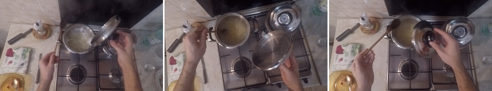
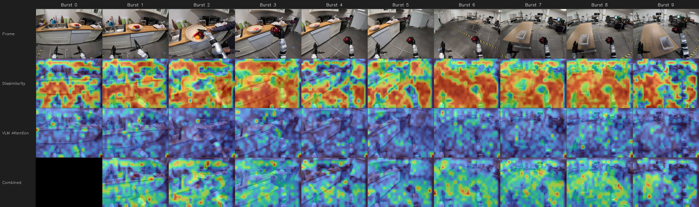

01TEMPORAL GATING
Look when it matters.
A lightweight vision encoder measures patch-level semantic change. Capture 32 frames when change crosses a threshold, or a safety timeout is reached.
PATCH EMBEDDINGS → BURST CAPTUREClosed-Loop Attention Feedback for Efficient Vision-Language Understanding
Look when it matters. Focus on what matters.
A training-free framework that understands streaming video with fewer vision-language model calls.
Attention from the previous response meets new visual change.
74.6% with uniform sampling
25.4 vs. 55 per EgoSchema clip
No fine-tuning. No learned parameters.
01 / THE IDEA
A minute of video at 30 fps contains 1,800 frames. Calling a vision-language model on a fixed schedule spends compute on quiet moments as well as meaningful events.
FOCUS makes observation adaptive. It detects semantic change, captures a short burst, and uses the model’s own decoder attention to guide spatial focus in the next burst. The video arrives as a stream; future frames are never required.
The central idea: close the loop between what the model sees and what it understands.
02 / THE METHOD
Decide when to look, where to focus,
and what to carry forward.
A lightweight vision encoder measures patch-level semantic change. Capture 32 frames when change crosses a threshold, or a safety timeout is reached.
PATCH EMBEDDINGS → BURST CAPTUREFuse visual change with the previous attention map. Amplify relevant vision-token values and suppress off-target ones in the decoder cache, keeping every token.
CHANGE × ATTENTION → SPATIAL PRIORAfter generation, extract text-to-vision attention from the last four decoder layers. Retain it as the spatial prior for the next burst, without updating model weights.
DECODER ATTENTION → NEXT BURSTUnderstanding from burst n shapes spatial focus in burst n + 1
Two compatible models. The Qwen2-VL-2B-Instruct vision encoder handles gating; Qwen3-VL-8B-Instruct generates responses. They share a model family, not weights.
A spatial intervention. Calibration scales value-cache entries during decoding. It leaves keys and queries untouched and removes no tokens. The first burst runs without calibration to establish context.
One fixed configuration. The reported experiments use τ = 0.4, 32-frame bursts, amplification α = 1.05, suppression β = 0.04, greedy decoding, and a 100-token cap.
03 / THE EVIDENCE
fewer calls than uniform sampling,
with comparable accuracy.
| Method | Accuracy | Calls / clip |
|---|---|---|
| Uniform sampling | 74.6% | 55 |
| BOLT streaming | 74.2% | 55 |
| DyCoke streaming | 71.4% | 12 |
| FOCUS gating only | 73.6% | 25.4 |
| FOCUS with feedback | 74.8% | 25.4 |
500 three-minute videos · 5-way multiple choice · 5-run means. All methods use Qwen3-VL-8B with matched 3.3 s cadence and prompting in the streaming setting.
fewer calls than uniform sampling,
at comparable captioning quality.
| Method | Quality / 5 | Total calls |
|---|---|---|
| Uniform sampling | 3.81 | 516 |
| BOLT | 3.91 | 263 |
| DyCoke | 3.81 | 263 |
| FOCUS gating only | 3.89 | 222 |
| FOCUS with feedback | 3.92 | 222 |
25 videos · GPT-5.2 quality ratings (1–5) · shared Qwen3-VL-8B backbone. Decoding settings differ across methods. FOCUS vs. BOLT quality: paired Wilcoxon p = .895.
The result is efficiency at comparable accuracy, not an accuracy win. Gating determines the call budget; feedback steers spatial focus. Both FOCUS variants make the same number of calls.
Calls and runtime are different. Call counts measure VLM invocations. Every arriving frame still passes through the gating encoder, at a reported cost of about 34 ms per frame.
VLM-only vs. end-to-end. On captioning, FOCUS has a VLM compute ratio of 0.59. Including the gating encoder, the serialized end-to-end ratio is 1.36. These ratios are inference seconds divided by video duration.
Limits of the evidence. Captioning is a small, LLM-judged study. Subtle events can fall below the gating threshold, and encoder cost can become the throughput bottleneck. See the paper for the full protocol and limitations.
04 / IN PRACTICE
Same selected bursts.
A more grounded description.

GATING ONLY
“…placed the metal lid onto the right-hand burner … covering the empty pot.”
WITH ATTENTION FEEDBACK
“…placed the metal lid onto the pot on the right side … covering it.”
Excerpts from the second burst. Attention carried over from the previous observation helps maintain focus on the pot as the action unfolds.
Across ten bursts, visual change and decoder attention combine to guide the next observation.

05 / BUILD ON THIS WORK
If you find FOCUS useful in your research,
please consider citing our paper.
@inproceedings{santhosh2026focus,
title = {{FOCUS}: Closed-Loop Attention Feedback
for Efficient Vision-Language Understanding},
author = {Santhosh, Akul and
Jhunjhunwala, Aastha},
booktitle = {Conference on Language Modeling},
year = {2026},
url = {https://github.com/akul-nv/focus}
}